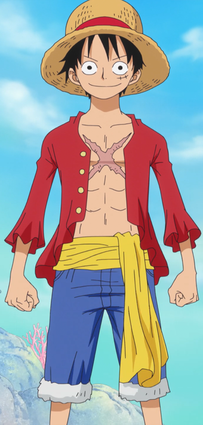

Sinopse:
Monkey D. Luffy é um jovem que,
inspirado em sua infância por um ídolo pirata chamado Shanks, o Ruivo.
Luffy sai do East blue em direção a Grand Line a fim de encontrar o
One Piece, o tesouro deixado por Gold Roger, o Rei dos Piratas e, assim,
proclamar-se como o novo Rei dos Piratas.
Autor: Eiichiro Oda
Editor: Viz
Data de publicação: 7 de julho de 2014 – presente
Adaptações: One Piece (1999), One Piece: Stampede (2019)
Gêneros: Ficção de aventura, Fantasia
| Temporada | Eps | Temporada | Eps | Temporada | Eps | Temporada | Eps |
| Temporada 1 | Temporada 7 | Temporada 13 | Temporada 19 | ||||
| Temporada 2 | Temporada 8 | Temporada 14 | Temporada 20 | ||||
| Temporada 3 | Temporada 9 | Temporada 15 | Total | ||||
| Temporada 4 | Temporada 10 | Temporada 16 | |||||
| Temporada 5 | Temporada 11 | Temporada 17 | |||||
| Temporada 6 | Temporada 12 | Temporada 18 |
